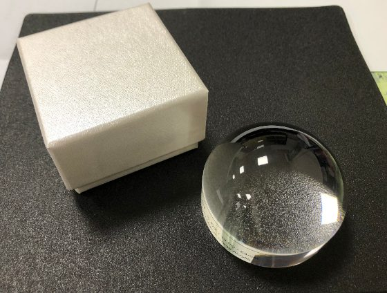
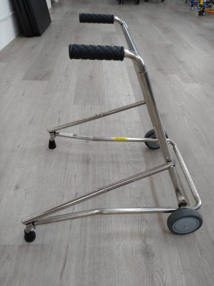
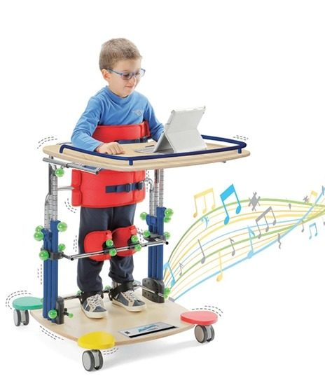

輔具品項
總筆數：17
| 品項 | 管理方式 | 數量（在庫／總數） | 申請設定 | 前台目錄 | 功能 |
|---|---|---|---|---|---|
 擴視機
視障輔具
擴視機
視障輔具
|
財產・單台 | 3 ／ 14 | 免評估 可臨時借用 | 顯示中 | 管理 |
|
 放大鏡 視障輔具 |
財產・單台 | 12 ／ 30 | 可臨時借用 | 顯示中 | 管理 |
| 攜帶型擴視機 視障輔具 | 財產・單台 | 0 ／ 9 | 免評估 | 顯示中 | 管理 |
| 白杖 視障輔具 | 財產・單台 | 6 ／ 10 | 免評估 可臨時借用 | 顯示中 | 管理 |
 調頻輔聽系統
聽障輔具
調頻輔聽系統
聽障輔具
|
財產・單台 | 2 ／ 18 | — | 顯示中 | 管理 |
 兒童輪椅
行動與擺位輔具
兒童輪椅
行動與擺位輔具
|
財產・單台 | 4 ／ 22 | 可臨時借用 | 顯示中 | 管理 |
|
 助行器 行動與擺位輔具 |
財產・單台 | 5 ／ 16 | 可臨時借用 | 顯示中 | 管理 |
| 副木 行動與擺位輔具 | 配發・數量 | 18 ／ — | 免評估 | 顯示中 | 管理 |
| 安全頭套 行動與擺位輔具 | 配發・數量 | 3 ／ — | 免評估 | 顯示中 | 管理 |
|
 站立架 行動與擺位輔具 |
財產・單台 | 1 ／ 8 | — | 未顯示 | 管理 |